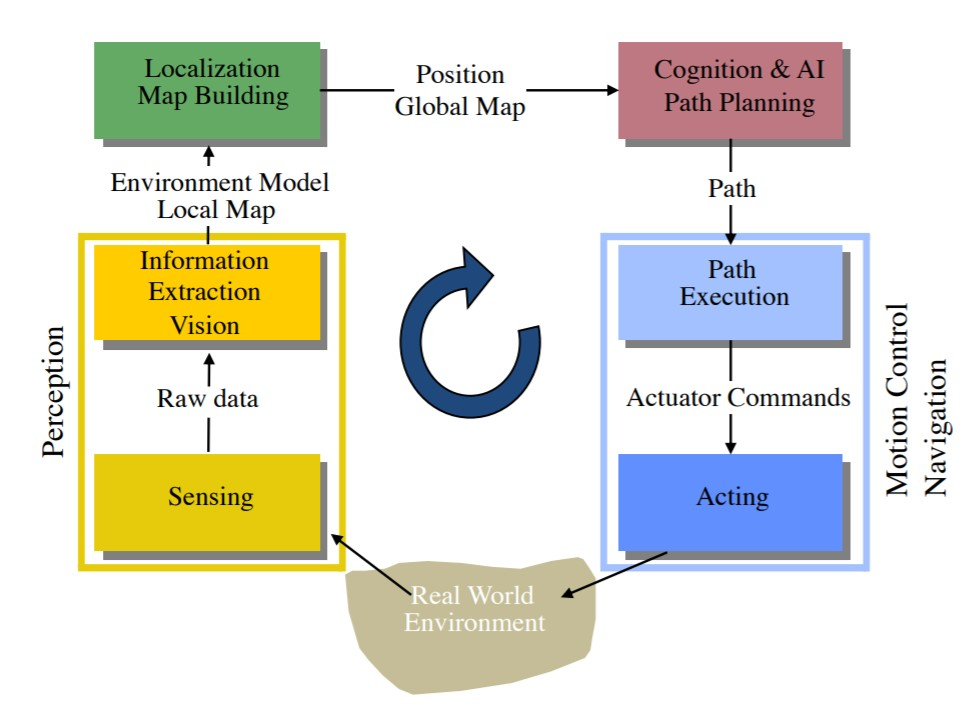

CS283 Lecture 01
Lecture 01 Introduction
What is a Robot
Definition: A machine capable of performing complex tasks in the physical world,
that is using sensors to perceive the environment and acts tele-operated or autonomous.
Autonomous Mobile Robotics
Autonomous mobile robots move around the environment.
Therefore ALL of them:
- They need to know where they are
- Global Positioning System (GPS)
- Guiding system
- Model of the environment
- They need to know where their goal is
- They need to know how to get there
- Different levels:
- Control
- Navigation
- Planning
- Different levels:
Most important capability (for autonomous mobile robots):
How to get from place A to place B? (safely and efficiently)
General Control Scheme for Mobile Robot Systems

Programming Review
Process vs. Thread
Process: Execution of one instance of a computer program
- Each process has its own virtual memory
- Contains only code and data from this program, the libraries and the OS
- Other processes (programs) cannot access this memory (shared memory access is possible but complicated)
- OS Scheduling
- OS can give higher or lower priority to certain processes
- Linux 命令
top，常用的性能分析工具，能够实时显示系统中各个进程的资源占用状况，类似于Windows的任务管理器。
- Each process has its own virtual memory
Multi-Threading 多线程
- In one process, multiple threads => parallel execution
- 🙂 Code and Memory is shared => easy exchange of data, save memory
- 😐 Synchronization can be tricky (mutex, dead lock, race condition)
- 🙁 If one thread crashes, the whole process (all threads) die
总结：进程就是每个执行的程序，而一个进程中可以有多个线程并行执行。这多个线程互相分享数据和内存，需要考虑它们之间同步的问题。如果其中一个线程崩溃，那么所有线程都会结束。
Processes and Threads in Robotics
Robot Operating System (ROS): Multiple Processes
- Each component runs in its own process: called node
- A node can have multiple threads => faster computation
- Nodes communicate using messages (and services)
- A node can send ( publish ) messages under different names called topic
- A node can listen to ( subscribe ) messages under different topics
ROS Messages
Messages are transfered over the network (TCP/IP) => multiple computers work together transparently
🙁 Messages are serialized, copied and de-serialized even if both nodes are on the same computer => slow (compared to pointer passing)
- Optimization: Nodelet (run different nodes in the SAME process => pointer passing => fast)
Messages are often passed around as shared pointers which are
- "write protected" using the
constkeyword (cannot be changed) - The shared pointers take the message type as template argument
- Shared pointers can be accessed like normal pointers
- "write protected" using the
Create own message: Text format
ROS nodes
- ROS core: keep track which nodes are running and their topics
- Show all nodes and topics in a graph:
rosrun rqt_graph rqt_graph
ROS Services
C++ Programming
C++ Object Orientation
C++ Constant Variables 常量
- Declare variables or objects that do not change (anymore) in the code:
const - Used for program-correctness, especially for multi-threading:
- Share the data (e.g. images)
- Make it read only via
const
- Declare variables or objects that do not change (anymore) in the code:
C++ Templates
C++ Shared Pointer
Compiler, Linker
- Standard in Linux: gcc: GNU Compiler Collection
- Compiler: Create machine code out of programming language
- Linker: Link the machine code with other machine code (provided by libraries)